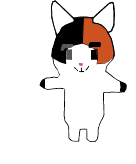

¿Qué es nuestra Solución Tecnológica?
Cat Time es una plataforma interactiva que funciona como un "Minecraft matemático", donde los estudiantes exploran un mundo en bloques y resuelven retos lógicos en 3D. Combinamos la gamificación, la construcción y los desafíos numéricos para transformar la práctica matemática en una experiencia totalmente divertida y atrapante.
¿De qué se trata?
La herramienta digital funciona como un entorno de juego inmersivo en el que los jóvenes avanzan construyendo, explorando y superando desafíos matemáticos paso a paso. A través de mecánicas de juego en un mundo virtual estilo sandbox, el sistema motiva al usuario a resolver problemas, desbloquear bloques y aplicar la lógica sin aburrimiento, haciendo que las matemáticas se sientan como un videojuego.
Saber más / ¿Por qué es importante?
Es fundamental porque rompe con el miedo a las matemáticas y la frustración escolar mediante la interacción lúdica y el aprendizaje práctico. Al enfrentar retos dentro de este entorno digital, los estudiantes desarrollan un pensamiento lógico y de resolución de problemas a largo plazo, comprendiendo que practicar números y fórmulas puede ser tan estimulante como construir en su juego favorito.
100% Organizado
+50 Monedas
